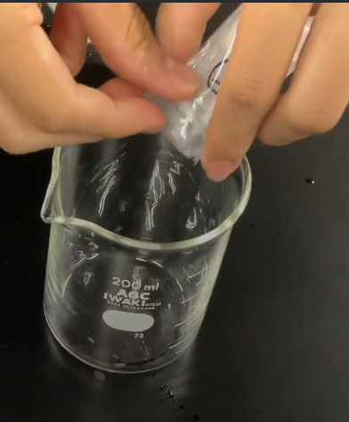

実験に必要なもの
- ④の粉（乳酸カルシウム）
- ⑤の粉（アルギン酸ナトリウム）
- 耐熱容器
- マドラー（お箸やガラス棒でもいい）
- 鍋（小さいものでいい。ポットで代用可）
- 机にひく新聞紙など（適宜）
耐熱容器と鍋（もしくはポット）、新聞紙などはキットのなかに入っておりませんので、ご自身で用意してください。
人工いくらは「いくら」という名前が入っていて、実際に食品に応用した例もありますが、今回は食べないでください。
この説明書は安全に実験をするために絶対に必要です。
絶対に最後までお読みください。
耐熱容器と鍋（もしくはポット）、新聞紙などはキットのなかに入っておりませんので、ご自身で用意してください。
人工いくらは「いくら」という名前が入っていて、実際に食品に応用した例もありますが、今回は食べないでください。
①（汚れるのを気にする方は新聞紙、汚れてもよい雑巾を机に広げます。）
②お湯を沸かします。
③５番の粉をお湯に溶かします。お湯は少なめのほうがイクラが固くなります。この時、粉が固まって溶けづらいですが混ぜ続ければ溶けます。また、多少溶け残っていても実験は可能です。
④４番の粉をお湯（水）に溶かします。お湯は100~200ml程が理想です。
お湯のほうが早く溶けますが水でも溶けます。
耐熱容器の数などと相談してどっちにするか決めてください
⑤(任意)５番の粉を溶かした溶液に食紅などで着色します。この過程をスキップする場合、次や、さらにその次の過程で実験結果がわかりづらい可能性があります。
⑥５番の溶液をスプーンですくって４番の溶液にたらします。
⑥で４番の溶液内に出来た粒を回収したら人工いくらの完成です。
④の粉（乳酸カルシウム）の乳酸と⑤の粉（アルギン酸ナトリウム）のアルギン酸がが反応してアルギン酸カルシウムになります。
アルギン酸カルシウムは水に溶けないので乳酸カルシウムとアルギン酸ナトリウムがぶつかるところだけ固体になります。
そしてその固体の粒同士はくっつきたがるので膜になります。
よって、表面は膜で覆われて、中が液体の粒ができます。
とても安い、イクラの代わりのものとしてこれと同じ原理
で作られた人工の偽イクラが実際に売られています。
また、この方法でワサビ味のイクラのような変わり種
も作られています。
材料は乳酸カルシウムとアルギン酸ナトリウムです。
乳酸カルシウムは水に溶けやすいのでゼリーなどにカルシウムを入れるときなどにも使われています。
アルギン酸ナトリウムはうまみ成分です。昆布のヌメリはこのアルギン酸ナトリウムが原因です。ただ、粉だけでなめると苦いです。
なめないでください
イクラを触ってみてください。
ぷにぷにしていて長く触っていたい感触です。（個人の感想です。）
人工 イクラの実験を通して、化学の世界のふしぎを楽 しんでいただくことができていたら幸いです。質問等 ございましたら、公式Lineか5aoristos@reabiz.jpまで。星光 のことや趣味のことなどでも気軽にご質問 ください。
参考：人工イクラをつくろう！
乳酸カルシウム・乳酸カルシウムＪ
Calcium lactate | 814-80-2、28305-25-1 | 製造 販売 | 武蔵野化学研究所 | 武蔵野化学研究所｜乳酸・アラニン・ピルビン酸のリーディングカンパニー